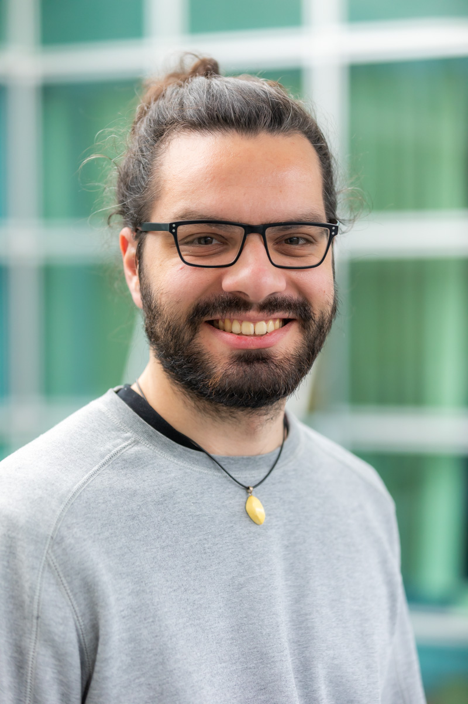

Photo : nicolasdohr.com
First name: Valentin Familly name: Richard Contact: valentin.richard at loria dot fr My CV
Prénom : Valentin Nom de famille : Richard Contact : valentin.richard at loria dot fr Mon CV
I'm a French PhD student in computational linguistics at LORIA (Nancy, France). I'm supervised by Philippe de Groote and Reinhard Muskens (joint PhD with ILLC, University of Amsterdam, cosupervised by Floris Roelofsen) on the topic:
Compositional and Dynamic Aspects of Inquisitive Semantics
My PhD consists in three main axes:- Modeling French interrogative clauses with abstract categorial grammars (ACG)
- Designing the syntax-semantics interface with neo-Davidsonian inquisitive semantics
- Completing the model to account for discourse anaphora resolution and epistemic dynamics
Je suis doctorant en linguisitique informatique au LORIA (Nancy). Je suis dirigé par Philippe de Groote et Reinhard Muskens (cotutelle avec l'ILLC, Université d'Amsterdam, co-encadrée par Floris Roelofsen) sur le sujet :
Aspects compositionnels et dynamiques de la sémantique inquisitrice
Mon doctorat consiste en trois axes principaux :- Modélisation des propositions interrogatives en français avec les grammaires catégorielles abstraites (ACG)
- Conception d'une interface syntaxe-sémantique avec la sémantique inquisitrice néo-davidsonienne
- Incorporation au modèle de la résolution d'anaphores du discours et d'une dynamique épistémique
Research interests
- Natural language syntax (in particular, questions) and syntax-semantics interface
- Grammars, in particular ACGs
- Logic
Intérêts de recherche
- Syntaxe des langues (en particulier les questions) et interface syntaxe sémantique
- Grammaires, en particulier les ACGs
- Logique
How to pronounce my name
- English equivalent "Valentine" /ˈvæləntaɪn ˈritʃərd/
- French exact pronounciation [valɒ̃ˈt̪̃æ], [valɒ̃t̃æ ʁiˈʃaːʁ]
Some links
Quelques liens
News
Infos récentes
- June 2023: Assistant for IWCS 2023. Organizer of the workshop InqBnB4 with Philippe de Groote.
- Juin 2023: Assistant pour IWCS 2023. Organisateur du workshop InqBnB4 avec Philippe de Groote.
- August 2021: Best student paper award for Keyboards as a New Model of Computation at MFCS 2021.
- Aout 2021: Récompense du meilleur papier étudiant Les claviers, un modèle de calcul à MFCS 2021.
- February 2021 - July 2021: Internship at LORIA, Nancy under the supervision of Philippe de Groote on Embedding intentional semantics into inquisitive semantics.
- Février 2021 - Juillet 2021: Stage de M2 au LORIA de Nancy, encadré par Philippe de Groote sur : Plongement de la sémantique intentionnelle dans la sémantique inquisitrice.
- October 2019 - August 2020: Internship at Utrecht Institute of Linguistics OTS, Utrecht Universiteit under the supervision of Michael Moortgat and Giuseppe Greco on Connections between extended Lambek calculus and Linear Logic.
- Octobre 2019 - Aout 2020: Stage à Utrecht Institute of Linguistics OTS, Utrecht Universiteit, encadré par Michael Moortgat et Giuseppe Greco sur : Connexions entre le calcul de Lambek étendu et la Logique Linéaire.